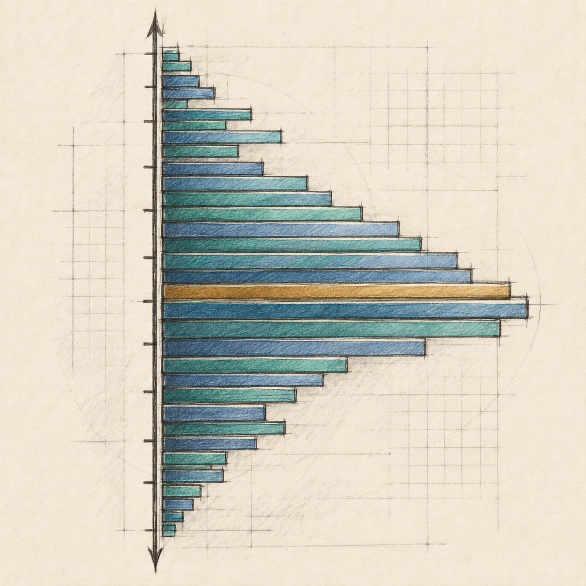

VOLUME PROFILE · ACTIVEIndicator Agent
Give each indicator one purpose. Register the Scientist's baseline, let the Lab compare versions on paired observations, and keep every improvement decision linked to evidence.
One indicator, one job
Indicator Agent owns
Hypothesis, versioned build spec, implementation, tests, visual review, rollback, and closure.
Chief Scientist owns
Baseline, outcome, primary metric, sample plan, uncertainty, EOD interpretation, and scientific stop signal.
Lab owns
Frozen replay, provenance checks, paired scoring, immutable result record, and major-advance whitepaper.
Submit an enhancement
A gain estimate is a hypothesis until the Lab measures it. Enter “unknown; experiment required” when no defensible estimate exists.
Register the measure
The Scientist defines these fields before observations are submitted. A draft can be frozen once; changes require a new protocol.
Paired experiment record
Freeze
After the Scientist checks the baseline, source, cutoff, metric, and sample plan.
Submit observations
Upload a JSON file of paired, source-identified rows. Existing IDs cannot be overwritten.
Row format
Every row needs observation_id, session_id, source_id, source_asof, decision_cutoff, outcome_time, input_hash, truth, incumbent, and candidate.